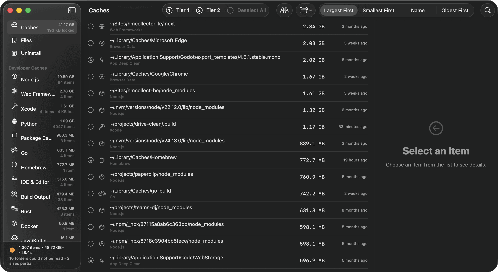

Every cleaner shows you a number.
This one shows you everything.
DDCC shows the paths it found, what created them, and what deleting each one costs. It also shows unreadable folders, partial sizes, and paths DDCC's safety guard left in place. The number is the start of the review, not the whole answer.
- every feature, no tier, no trial
- no account, no telemetry, no network
- the source is available to read

The total comes with the accounting.
Different cleaners can report different numbers for the same disk. Much of the gap comes from purgeable space, which macOS already counts as available and reclaims on its own. DDCC reports the space it can remove directly and labels the gaps it could not measure.
Purgeable space is excluded
macOS already counts it as available and reclaims it on its own. Adding it to the total would bill you for space you never lost.
Every path names its source
A Homebrew zap stanza, a package receipt, a container identifier. Attribution is by declaration, never by matching a name and hoping.
What it could not read is stated
Unreadable folders and sizes it could only measure in part are reported beside the total. That is what the plus on the figure means.
Refusals appear with their reason
Paths inside an allowed folder that DDCC's safety guard rejected are listed, instead of quietly vanishing from the total.
Deleting a build cache costs one slow rebuild. Deleting a Simulator runtime costs a six-gigabyte download. DDCC keeps those costs visible before you select anything.
Three focused views, with clear limits.
Developer & System Caches
Xcode, node_modules, Docker, Go, Rust, Python, Homebrew, and inactive toolchain versions. And what macOS and your apps leave behind: system and app caches, browser data, iOS backups, and logs.
App footprints
Every installed app, and every app already gone, with the evidence that attributed each path to it. Shared data is retained until the last claimant leaves.
Large & forgotten
Big, long-unmodified files and bundles outside the cache rules. You review each one, and this view can only move things to the Trash.
The interesting part is the retained column.
Removing an app is only part of the job. Shared containers can belong to several apps at once, so DDCC separates bytes it can remove now from bytes claimed by another installed app.

| Evidence | What it proves | Confidence |
|---|---|---|
| Sandbox container | The app's own directory, by bundle identifier | Declared |
| Homebrew zap stanza | Paths the cask author says belong to it | Declared |
| Package receipt | Files the installer recorded writing | Declared |
| Application group | A container shared between named apps | Declared |
| Broken pointer | A manifest naming a program that no longer exists | Provable |
| Similar name | Nothing. DDCC does not use this. | Not used |
Old is a guess, and it says so.
Big files and bundles that no cache rule covers, each with its path and how long since it changed. Age is the only signal available here and it is a weak one, so DDCC hands you the list rather than a recommendation.

Removal starts with the cost.
Confirmation sheets explain what each removal costs before anything moves. Only Tier 3 asks for more: selecting one of those items requires typing DELETE before the button will work.

Free to use, and staying that way.
There is no paid tier, no trial and no licence key. The licence covers your own use and a company's own internal use, royalty-free and permanently — only redistributing DDCC commercially needs a separate arrangement. If you want to support the work, that is appreciated and never expected.
- no account, no sign-in, no expiry
- no network connections or trackers
- no upsell prompts, no bundled extras